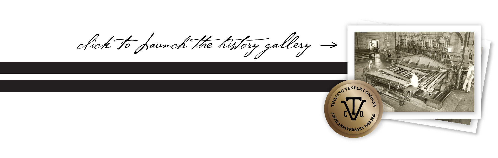

Thiesing Veneer Company was founded in 1920 by Louis Thiesing of Indiana. Thiesing started by doing custom cutting at Indiana Veneer Company.
With more experience and a larger customer base, Louis moved to his own facility in Indianapolis. In 1924 Thiesing had built a competitive business based upon his own veneer production. In 1938 the company ownership advanced a generation to Louis's daughter Elsie and her husband Robert Mathers.
In the 1960's the construction of Interstate 70 forced Thiesing from its Indianapolis location to its current facility in Mooresville, Indiana. A decade later the recession in the 1970's forced Thiesing to suspend operations. When the economy got back on track the plant reopened as strictly a custom cutting veneer mill and continues in that tradition today.
We are proud to announce that in 2020, Thiesing Veneer Company will be 100 years old. We would like to thank all the suppliers, customers, and employees that we have worked with over the years to help make this possible. As we look to the future, we will always rely on the things that have made us a successful business for the last 100 years — hard work and dedication.
